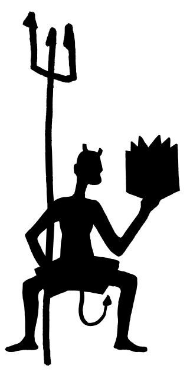

Neil Gaiman
NOTRE FUTURE DÉPEND
DES BIBLIOTHÈQUES,
DE LA LECTURE
ET DE L’IMAGINATION

Une conférence sur le devoir de chaque citoyen d’exercer son imagination et de pourvoir à ce que les autres exercent la leur.
Il est important que les gens précisent dans quel camp ils se rangent et pourquoi, et s’ils pourraient être de parti pris. Une déclaration d’intérêts de la part des membres, en quelque sorte. Donc, je vais vous parler de lecture. Je vais vous dire que les bibliothèques sont importantes. Je vais suggérer que lire de la fiction, lire pour le plaisir, est une des plus importantes activités à laquelle on puisse s’adonner. Je vais lancer un appel passionné pour que les gens comprennent ce que sont les bibliothèques et les bibliothécaires, et qu’il faut les préserver.
Je suis de parti pris, de façon évidente et gigan-tesque : je suis auteur, souvent auteur de fiction. J’écris pour les enfants et les adultes. Depuis une trentaine d’années, je gagne ma vie par mes mots, en majorité en inventant des choses et en les écrivant. Il est évidemment de mon intérêt que les gens lisent, qu’ils lisent de la fiction, que bibliothèques et bibliothécaires continuentà exister et aident à favoriser l’amour de la lecture et des lieux où la lecture peut se pratiquer.

Donc, en tant qu’auteur, je suis partial. Mais je suis beaucoup plus partial en tant que lecteur. Et plus encore en tant que citoyen britannique. Je suis venu ici ce soir donner une conférence sous les auspices de la Reading Agency : une organisation humanitaire qui a pour mission d’offrir à chacun les mêmes chances dans la vie en aidant les gens à devenir des lecteurs assurés et enthousiastes. Une organisation qui soutient des programmes d’alphabétisation, des bibliothèques et des individus, et qui encourage ouvertement et effrontément l’action de lire. Parce que, nous dit-elle, tout change, quand on lit. Et c’est de ces changements, de cette action de lire que je suis venu vous parler ce soir. Je voudrais parler de ce que la lecture accomplit. Dire à quoi elle sert.
J’ai assisté un jour à New York à une conférence sur la construction de prisons privées – une énorme industrie en développement, en Amérique. Cette industrie des prisons a besoin de planifier sa croissance future : de combien de cellules va-t-elle avoir besoin ? Combien de détenus y aura-t-il dans quinze ans ? Et ils ont découvert qu’on pouvait le prédire très facilement, en utilisant un algorithme assez simple, basé sur la recherche du pourcentage d’enfants de dix et onze ans qui ne savaient pas lire. Et qui, à coup sûr, ne lisaient pas pour le plaisir.

Ce n’est pas un rapport absolu : on ne peut pas affirmer qu’une société instruite n’a aucune crimi-nalité. Mais il y a de très réelles corrélations. Et je crois que certaines de ces corrélations, les plus élémentaires, découlent d’un fait très simple. Les gens instruits lisent de la fiction. La fiction a deux rôles. D’abord, c’est une drogue d’appel vers la lecture. Le besoin de savoir ce qui se passe ensuite, de vouloir tourner la page, le besoin de continuer, même si c’est dur, parce que quelqu’un a des problèmes et qu’il faut que vous sachiez comment tout cela va tourner…
…c’est une pulsion très forte. Et cela vous force à apprendre des mots nouveaux, à formuler des pensées nouvelles, à persévérer. À découvrir que lire est en soi un plaisir. Une fois qu’on apprend ça, on est en bonne voie pour tout lire. Et lire, c’est la clé. Le bruit a couru brièvement, il y a quelques années, que nous vivions dans un monde post-alphabétisé, dans lequel la capacité à tirer un sens des mots écrits était en quelque sorte dépassée, mais cette époque est révolue ; les mots sont plus importants que jamais : nous naviguons dans le monde avec les mots et, au fur et à mesure que le monde bascule vers le Web, nous avons besoin de le suivre, de communiquer et d’appréhender ce que nous lisons
Les gens qui ne peuvent pas se comprendre entre eux ne peuvent pas échanger d’idées, ne peuvent pas communiquer, et les logiciels de traduction ont leurs limites. Je ne crois pas qu’il existe de mauvais livre pour enfants. De temps en temps, la mode pousse des adultes à désiger une catégorie de livres pour enfants, un genre, peut-être, ou un auteur, et à déclarer que ce sont de mauvais livres, des livres qu’il faudrait empêcher les enfants de lire. J’ai vu ça se produire mainte et mainte fois ; on a déclaré qu’Enid Blyton était un mauvais auteur, R. L. Stine et des dizaines d’autres. On a reproché aux bandes dessinées de propager l’illettrisme. La façon la plus simple de s’assurer que nous élevons des enfants instruits est de leur apprendre à lire et de leur montrer que la lecture est une activité agréable. Et cela signifie, à la base, trouver des livres qui leur plaisent, leur donner accès à ces livres et les laisser les lire. C’est du pipeau. C’est du snobisme et de la sottise. Il n’y a pas de mauvais auteurs pour enfants, des auteurs qui leurs plaisent, qu’ils veulent lire, qu’ils recherchent, parce que chaque enfant est différent. Les enfants savent trouver les histoires qu’ils ont besoin de trouver. Et c’est eux-mêmes qu’ils amènent aux histoires. Une idée éculée et désuète n’est pas pour eux éculée et désuète. C’est la première fois que l’enfant la rencontre. Ne découragez pas les enfants de lire parce que vous estimez qu’ils ne lisent pas ce qu’il faudrait. Une fiction qui vous déplaît sera la drogue d’appel vers d’autres livres, que vous préfèrerez peut-être. Et tout le monde n’a pas les mêmes goûts que vous.

Un adulte bien intentionné peu facilement détruire l’amour de la lecture chez un enfant : empêchez-le de lire ce qui lui plaît, ou donnez-lui des livres valables mais ennuyeux qui vous plaisent à vous, les équivalents xxie siècle de la littérature « édifiante » victorienne. Vous vous retrouverez avec une génération convaincue que lire n’est pas cool et,ce qui est pire, pas agréable. Nous avons besoin que nos enfants posent un pied sur l’échelle de la lecture : tout ce qu’ils aimeront lire les fera progresser vers le haut, un échelon après l’autre, vers l’instruction. (Ne faites pas non plus comme l’auteur ici présent,lorsque sa fille de onze ans était fan de R. L. Stine, c’est-à-dire aller lui chercher un exemplaire du Carrie de Stephen King, en lui expliquant que, si elle avait aimé ceux-là, elle allait adorer celui-ci ! Pendant le reste de son adolescence, Holly n’a plus jamais lu que de paisibles histoires de colons dans les prairies, et elle me foudroie encore du regard chaque fois qu’on mentionne le nom de Stephen King.) Deuxième rôle de la fiction, elle développe l’empathie. Quand vous regardez la télé ou un film, vous voyez des choses qui arrivent à d’autres gens. La fiction en prose est une construction que vous bâtissez à partir de vingt-six lettres et d’une poignée de signes de ponctuation ; vous et vous seul, en utilisant votre imagination, vous créez un monde, vous le peuplez et vous voyez par d’autres yeux. Vous avez l’occasion d’éprouver des choses, de visiter des lieux et des mondes que vous ne connaîtriez jamais autrement. Vous apprenez que tous les gens autour de vous sont des moi,eux aussi. Vous êtes quelqu’un d’autre et,lorsque vous regagnez votre propre monde, vous allez en être légèrement changé.
L’empathie est un outil qui construit des groupes à partir de gens, afin de nous permettre de fonctionner comme plus que de simples individus préoccupés d’eux-mêmes. En lisant, on découvre également quelque chose d’une importance vitale pour se faire un chemin dans le monde. Et c’est cela : rien n’oblige le monde à être tel qu’il est. les choses peuvent être différentes. Je me trouvais en Chine, en 2007, lors de la première convention de Science-fiction et de Fantasy de l’histoire chinoise à être approuvée par le Parti. Et, à un moment, j’ai pris à part un officiel de haut rang, et je lui ai demandé : « Pourquoi ? » La SF faisait depuis longtemps l’objet d’une désappro-bation. Qu’est-ce qui avait changé ? « C’est simple », m’a-t-il répondu. Les Chinois excellaient à créer des choses si d’autres leur en apportaient les plans. Mais ils n’innovaient pas, ils n’inventaient pas. Ils n’imaginaient pas. Aussi ont-ils envoyé une délégation aux usa, chez Apple, Microsoft, Google, et ils ont posé là-bas aux gens qui inventaient le futur des questions sur eux-mêmes. Et ils ont découvert que tous avaient lu de la science-fiction quand ils étaient enfants.
La fiction peut vous présenter un monde différent. Elle peut vous emmener où vous n’avez jamais été. Une fois que vous aurez visité d’autres mondes, comme les gens qui ont goûté aux fruits du pays des Fées, vous ne vous satisferez plus entièrement du monde dans lequel vous avez grandi. Le mécontentement est une bonne chose : des gens mécontents peuvent modifier et améliorer leur monde, le laisser meilleur, le laisser différent. Et tant que nous sommes sur ce sujet, j’aimerais dire quelques mots sur l’évasion. J’entends qu’on emploie ce terme comme s’il s’agissait d’une mauvaise chose. Comme si la fiction « d’évasion » était un opiacé bon marché auquel s’adonnent les gens troublés, les idiots et les dupes, et que la seule fiction qui vaille la peine, pour les adultes ou les enfants, soit la fiction mimétique, qui reflète le pire du monde dans lequel se trouve le lecteur. Si vous étiez prisonnier d’une situation impos-sible, en un lieu désagréable, avec des gens qui vous veulent du mal, et qu’on vous offre une évasion temporaire, pourquoi ne la saisiriez-vous pas ? Et voilà tout simplement ce qu’est la fiction d’évasion : une fiction qui ouvre une porte, montre qu’il fait soleil dehors, vous procure une destination où vous contrôlez les choses, où vous vous retrouvez avec des gens avec lesquels vous voulez être (et ne vous y trompez pas, les livres sont des lieux réels) ; et, chose plus importante, durant votre évasion, les livres peuvent aussi vous apporter des connaissances sur le monde et sur votre situation, vous fournir des armes, vous doter d’une armure : des choses bien réelles que vous pourrez rapporter dans votre prison. Des méthodes, du savoir et des outils que vous pourrez employer à vous évader pour de bon. Comme nous l’a rappelé J. R. R. Tolkien, les seules personnes qui dénoncent l’évasion sont les geôliers.
Une autre façon de détruire l’amour d’un enfant pour la lecture, bien entendu, est de vous assurer qu’aucun livre ne traîne autour de lui. Et de ne lui proposer aucun endroit où en lire. J’ai eu de la chance. J’ai disposé, en grandissant, d’une excellente bibliothèque locale. J’avais le genre de parents que je pouvais persuader de me déposer à la bibliothèque quand ils partaient au travail, pendant les vacances d’été, et le genre de bibliothécaires qui n’avaient aucune objection à ce qu’un petit garçon non accompagné revienne chaque matin dans la section enfants exploiter systématiquement le catalogue sur fiches, en quête de livres qui conte-naient des fantômes, de la magie ou des fusées, en quête de vampires, de détectives, de sorcières ou de merveilles. Et quand j’ai eu fini de lire la section enfants, j’ai attaqué les livres pour adultes.


C’étaient de bons bibliothécaires. Ils aimaient les livres et aimaient qu’on en lise. Ils m’ont appris à commander des livres à d’autres bibliothèques par prêt entre bibliothèques. Ils n’avaient aucun snobisme, quoi que je puisse lire. Ils semblaient simplement contents de voir un petit garçon aux yeux écarquillés qui adorait lire, et ils me parlaient des livres que je lisais, me trouvaient d’autres livres d’une même série, m’aidaient. Ils me traitaient comme n’importe quel lecteur – ni plus ni moins –, ce qui signifie qu’ils me traitaient avec respect. Je n’avais pas l’habitude d’être traité avec respect, quand j’avais huit ans.
Mais les bibliothèques sont une affaire de liberté. Liberté de lire, liberté d’idées, liberté de communication. C’est une affaire d’éducation (ce qui n’est pas un processus qui prend fin le jour où nous quittons l’école ou l’université), de distrac-tion, de création d’espaces protégés et d’accès à l’information.
Je m’inquiète de voir qu’ici, au xxie siècle, les gens ne comprennent pas la nature d’une bibliothèque, et son rôle. Si vous ne voyez en une bibliothèque que des étagères de livres, elle peut vous paraître vieillie ou dépassée dans un monde où la plupart des livres, mais pas tous, existent sous forme numérique. Mais ce serait passer fondamen-talement à côté de son rôle. Je pense qu’il est lié à la nature de l’information. L’information a une valeur, et l’information correcte a une énorme valeur. Tout au long de l’his-toire humaine, nous avons vécu sous le règne de la pénurie d’information ; il était toujours important de posséder l’information nécessaire et elle avait toujours de la valeur : à quel moment planter les semences, où trouver les choses, les cartes, les chroniques et les contes – tout cela valait bien un repas et de la compagnie. L’information était une commodité précieuse, et ceux qui la possédaient ou savaient comment l’obtenir pouvaient faire payer ce service..
Au cours de ces dernières années, nous sommes passés d’une économie pauvre en information à une autre, mue par une pléthore d’information. Selon Eric Schmidt, de Google, la race humaine rée désormais autant d’information tous les deux jours que nous l’avions fait entre l’aube de la civilisation et 2003. Ça représente à peu près cinq exaoctets de données par jour, pour ceux d’entre vous qui tiennent les comptes. Le défi ne revient plus à découvrir cette plante rare qui pousse dans un désert, mais à localiser une plante précise, qui croît dans une jungle. Nous allons avoir besoin d’aide pour surfer sur ces informations et trouver ce dont nous avons véritablement besoin. Les bibliothèques sont des endroits où vont les gens pour trouver des informations. Les livres ne sont que le sommet de l’iceberg de données : ils sont là, et les bibliothèques peuvent vous en procurer, de façon gratuite et légale. Il y a plus d’enfants que jamais qui empruntent des livres dans les bibliothèques – toutes sortes de livres : papier, numérique et audio. Mais les bibliothèques sont aussi, par exemple, des lieux où les gens qui ne disposeraient pas d’un ordinateur, qui n’auraient pas de liaison internet, peuvent aller en ligne sans rien débourser : une énorme importance, alors que les moyens de trouver des emplois, de se porter candidat à des emplois ou à des aides, migrent en ligne de façon de plus en plus exclusive. Les bibliothécaires peuvent aider ces gens à surfer dans ce monde-là.

Je ne crois pas que tous les livres vont ou doivent migrer sur écran ; comme me l’a fait un jour remarquer Douglas Adams, plus de vingt ans avant l’apparition du Kindle, le livre physique est compa-rable au requin. Les requins sont anciens : il y avait des requins dans l’océan avant les dinosaures. Et la raison pour laquelle les requins existent encore, c’est qu’ils sont de meilleurs requins que n’importe quoi d’autre. Les livres physiques sont solides, diffi-ciles à détruire, ils résistent aux bains, fonctionnent à la lumière solaire et sont agréables en main : ils excellent à être des livres, et ils existeront toujours. Leur place est dans les bibliothèques, en même temps que celles-ci sont déjà devenues des lieux où on peut accéder aux e-books, aux livres audio, aux dvd et aux contenus en ligne. Une bibliothèque est un entrepôt d’informa-tions, et un lieu qui fournit à tous les citoyens une égalité d’accès à ces informations. Y compris aux informations sur la santé. Et aux informations sur la santé mentale. C’est un espace communautaire. C’est un abri, un refuge face au monde. C’est un lieu où on trouve des bibliothécaires. À quoi ressembleront les bibliothèques du futur, voilà ce que nous devrions dès à présent imaginer.

L’instruction est plus importante qu’elle ne l’a jamais été, en ce monde de textos et de mails, un monde d’information écrite. Nous avons besoin de savoir lire et écrire, nous avons besoin d’avoir des citoyens du globe capables de lire sans inconfort, d’appréhender ce qu’ils lisent, d’en comprendre les nuances et de se faire comprendre en retour. Les bibliothèques sont en réalité des portes sur l’avenir. Aussi est-il regrettable que, partout dans le monde, nous voyions des autorités locales saisir toutes les occasions de fermer les bibliothèques comme un moyen facile d’économiser de l’argent, sans s’apercevoir qu’ils volent l’avenir pour payer le présent. Ils closent des portes qui devraient rester ouvertes.
Selon une étude récente de l’Organisation de Coopération et de Développement Économique, l’Angleterre est « le seul pays où le groupe d’âge le plus élevé a plus de facilités tant en lecture qu’en calcul que le groupe le plus jeune, une fois pris en compte d’autres facteurs tels que le sexe, les origines socio-économiques et le type d’emploi ». Ou, pour l’exprimer autrement, nos enfants et nos petits-enfants lisent et comptent moins bien que nous. Ils sont moins capables de naviguer dans le monde, de le comprendre pour résoudre des problèmes. On peut plus facilement leur mentir et les tromper, ils seront moins capables de changer le monde dans lequel ils se retrouvent, moins employables. Tout cela à la fois. En tant que pays, l’Angleterre passera derrière d’autres nations développées, faute d’une force de travail spécialisée. Les politiciens pourront blâmer le parti d’en face pour ces résultats, la vérité, c’est que nous devons apprendre à nos enfants à lire et à aimer lire.
Nous avons besoin de bibliothèques. Nous avons besoin de livres. Nous avons besoin de citoyens instruits. Je me fiche – je ne crois pas que ce soit important – que ces livres soient sur papier ou numériques, qu’on lise sur un rouleau ou qu’on fasse défiler un écran. C’est le contenu qui compte. Un livre est aussi son contenu, et ça, c’est important. Les livres sont notre façon de communiquer avec les morts. Notre façon d’apprendre des leçons de ceux qui ne sont plus avec nous, la façon dont l’humanité elle-même s’est édifiée, a progressé, a rendu le savoir graduellement plus important, plutôt que d’en faire quelque chose qu’on doive sans cesse réapprendre. Il existe des histoires plus anciennes que la plupart des pays, des histoires qui ont depuis longtemps survécu aux cultures et aux édifices où on les a racontées pour la première fois.
Je crois que nous avons des responsabilités envers l’avenir. Des responsabilités et des obliga-tions envers les enfants, envers les adultes que ces enfants deviendront, envers le monde dont ils se retrouveront les habitants. Nous tous – en tant que lecteurs, qu’écrivains, que citoyens : nous avons des obligations. Je me suis dit que j’allais essayer d’en énoncer quelques-unes ici. Je crois que nous avons obligation de lire par plaisir, en tous lieux, publics et privés. Si nous lisons par plaisir, si d’autres nous voient lisant, alors nous apprenons, alors nous exerçons nos imaginations. Nous montrons aux autres que lire est une bonne chose.
Nous avons obligation de soutenir les biblio-thèques. D’utiliser les bibliothèques, d’encourager les autres à les utiliser, de manifester contre leur fermeture. Si vous n’attachez pas de prix aux biblio-thèques, alors vous n’en attachez ni à l’information, ni à la culture, ni à la sagesse. Vous réduisez au silence les voix du passé et vous nuisez à l’avenir. Nous avons obligation de faire la lecture à haute voix à nos enfants. De leur lire des choses qui leur plairont. De leur lire des histoires dont nous sommes déjà lassés. De jouer les voix pour les rendre intéressantes, et de ne pas cesser de leur faire la lecture juste parce qu’ils ont appris à lire. Utilisez le moment de la lecture à voix haute comme un moment d’intimité, un moment où l’on ne regarde pas son téléphone, où l’on met de côté les distrac-tions du monde.
Nous avons une obligation d’employer le langage. De nous astreindre : de découvrir ce que les mots signifient et comment les déployer, de communiquer de façon claire, pour dire ce que nous voulons dire. Nous ne devons pas chercher à figer le langage, ou à le faire passer pour une chose morte qu’on doit révérer ; nous devrions l’employer comme une créature vivante, fluctuante, qui emprunte des mots, qui permet aux sens et aux prononciations d’évoluer avec le temps.
Nous avons l’obligation de comprendre et de reconnaître qu’en tant qu’écrivains pour enfants nous accomplissons un travail important, parce que, si nous ne le remplissons pas correctement et que nous écrivons des livres ennuyeux qui détour-nent les enfants de la lecture et des livres, nous amoindrissons notre avenir et diminuons le leur. Nous tous – adultes et enfants, écrivains et lecteurs –, nous avons l’obligation de rêver. Une obligation d’imaginer. Il est facile de se conduire comme si personne ne pouvait rien changer, comme si nous étions dans un monde où la société est énorme et l’individu moins que rien ; un atome dans un mur, un grain de riz dans un champ. Mais la vérité, c’est que les individus changent sans cesse leur monde, les individus fabriquent l’avenir, et ils le font en imaginant que les choses peuvent être différentes. Regardez autour de vous. Je suis sérieux : arrê-tez-vous un instant et regardez autour de vous la salle où vous vous trouvez. Je vais vous signaler un détail tellement évident qu’on tend à l’oublier.
Le voici : c’est que tout ce que vous pouvez voir, murs compris, a, à un moment donné, été imaginé. Quelqu’un a décidé qu’il était plus facile de s’asseoir sur une chaise que par terre et a imaginé la chaise. Quelqu’un a dû imaginer un moyen grâce auquel je vous parle, à Londres en ce moment, sans que personne ne se fasse tremper par la pluie. Cette salle et les objets qu’elle contient, et tout ce que ce bâtiment contient d’autre, cette ville, existent parce que, encore et encore et toujours, des gens ont imaginé des choses. Ils ont rêvassé, ils ont médité, ils ont fabriqué des choses qui ne fonctionnaient pas tout à fait, ils ont décrit des choses qui n’ex-istaient pas encore à des gens qui ont ri d’eux.
Et puis, avec le temps, ils ont réussi. Tous, mouvements politiques ou mouvements person-nels, ont commencé avec des gens qui imaginaient une autre façon d’exister. Nous avons une obligation de rendre belles les choses. De ne pas laisser le monde plus laid que nous l’avons trouvé, de ne pas vider les océans, de ne pas abandonner nos problèmes à la génération suivante. Nous avons une obligation de nettoyer ce que nous avons sali, de ne pas transmettre à nos enfants un monde que, faute de vision à long terme, nous avons gâché, dépouillé et mutilé. Nous avons une obligation de dire à nos politiciens ce que nous voulons, de voter contre les politiciens, quel que soit leur parti, qui ne comprennent pas l’intérêt de la lecture pour créer des citoyens de qualité, qui ne veulent pas agir pour préserver et protéger le savoir et encourager l’instruction. Ce n’est pas une affaire de politique politicienne. C’est une question de simple humanité. On a un jour demandé à Albert Einstein comment nous pouvions rendre nos enfants plus intelligents. Sa réponse a été à la fois simple et sage. « Si vous voulez que vos enfants soient intelligents, a-t-il dit, lisez-leur des contes de fées. Si vous voulez qu’ils soient plus intelligents, lisez-leur plus de contes de fées. » Il comprenait la valeur de la lecture, et de l’imagination. J’espère que nous pourrons donner à nos enfants un monde dans lequel on leur fera la lecture, où ils liront, imagineront et comprendront.
MERCI DE VOTRE COMPREHENSION
Ce site a été mis en page par Aimée Vermeren